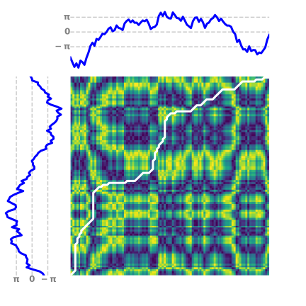

Note
Click here to download the full example code
DTW computation with a custom distance metric¶
This example illustrates how to use the DTW computation of the optimal
alignment path 1 on an user-defined distance matrix using
dtw_path_from_metric().
Left is the DTW of two angular time series using the length of the arc on the unit circle as a distance metric 2 and right is the DTW of two multidimensional boolean time series using hamming distance 3.
The images represent cost matrices, that is, on the left the length of the arc between each pair of angles on the unit circle and on the right the hamming distances between the multidimensional boolean arrays. In both cases, the corresponding time series are represented at the left and at the top of each cost matrix.
The optimal path, that is the path that minimizes the total user-defined cost from the first time point to the last one, is represented in white on the image.
- 1
H. Sakoe and S. Chiba, “Dynamic programming algorithm optimization for spoken word recognition”. IEEE Transactions on Acoustics, Speech, and Signal Processing, 26(1), 43-49 (1978).
- 2
Definition of the length of an arc on Wikipedia.
- 3
See Hammig distance in Scipy’s documentation.
- 

Out:
/Users/hong/Downloads/docs/examples/metrics/plot_dtw_custom_metric.py:156: UserWarning: This figure includes Axes that are not compatible with tight_layout, so results might be incorrect.
plt.tight_layout()
# Author: Romain Fayat
# License: BSD 3 clause
# sphinx_gallery_thumbnail_number = 2
import numpy as np
from numpy import pi
from sklearn.metrics import pairwise_distances
import matplotlib.pyplot as plt
from matplotlib.colors import LinearSegmentedColormap
from tslearn.generators import random_walks
from tslearn import metrics
from tslearn.preprocessing import TimeSeriesScalerMeanVariance
np.random.seed(0)
n_ts, sz = 2, 100
# Example 1 : Length of the arc between two angles on a circle
def arc_length(angle_1, angle_2, r=1.):
"""Length of the arc between two angles (in rad) on a circle of
radius r.
"""
# Compute the angle between the two inputs between 0 and 2*pi.
theta = np.mod(angle_2 - angle_1, 2*pi)
if theta > pi:
theta = theta - 2 * pi
# Return the length of the arc
L = r * np.abs(theta)
return(L)
dataset_1 = random_walks(n_ts=n_ts, sz=sz, d=1)
scaler = TimeSeriesScalerMeanVariance(mu=0., std=pi) # Rescale the time series
dataset_scaled_1 = scaler.fit_transform(dataset_1)
# DTW using a function as the metric argument
path_1, sim_1 = metrics.dtw_path_from_metric(
dataset_scaled_1[0], dataset_scaled_1[1], metric=arc_length
)
# Example 2 : Hamming distance between 2 multi-dimensional boolean time series
rw = random_walks(n_ts=n_ts, sz=sz, d=15, std=.3)
dataset_2 = np.mod(np.floor(rw), 4) == 0
# DTW using one of the options of sklearn.metrics.pairwise_distances
path_2, sim_2 = metrics.dtw_path_from_metric(
dataset_2[0], dataset_2[1], metric="hamming"
)
# Plots
# Compute the distance matrices for the plots
distances_1 = pairwise_distances(
dataset_scaled_1[0], dataset_scaled_1[1], metric=arc_length
)
distances_2 = pairwise_distances(dataset_2[0], dataset_2[1], metric="hamming")
# Definitions for the axes
left, bottom = 0.01, 0.1
w_ts = h_ts = 0.2
left_h = left + w_ts + 0.02
width = height = 0.65
bottom_h = bottom + height + 0.02
rect_s_y = [left, bottom, w_ts, height]
rect_dist = [left_h, bottom, width, height]
rect_s_x = [left_h, bottom_h, width, h_ts]
# Plot example 1
plt.figure(1, figsize=(6, 6))
ax_dist = plt.axes(rect_dist)
ax_s_x = plt.axes(rect_s_x)
ax_s_y = plt.axes(rect_s_y)
ax_dist.imshow(distances_1, origin='lower')
ax_dist.axis("off")
ax_dist.autoscale(False)
ax_dist.plot(*zip(*path_1), "w-", linewidth=3.)
ticks_location = [-pi, 0, pi]
ticks_labels = [r"$\bf-\pi$", r"$\bf0$", r"$\bf\pi$"]
ax_s_x.plot([0, sz - 1], [ticks_location]*2, "k--", alpha=.2)
ax_s_x.plot(np.arange(sz), dataset_scaled_1[1], "b-", linewidth=3.)
ax_s_x.set_xlim((0, sz - 1))
ax_s_x.axis("off")
ax_s_y.plot([ticks_location]*2, [0, sz - 1], "k--", alpha=.2)
ax_s_y.plot(-dataset_scaled_1[0], np.arange(sz), "b-", linewidth=3.)
ax_s_y.set_ylim((0, sz - 1))
ax_s_y.axis("off")
for loc, s in zip(ticks_location, ticks_labels):
ax_s_x.text(0, loc, s, fontsize="large", color="grey",
horizontalalignment="right", verticalalignment="center")
ax_s_y.text(-loc, 0, s, fontsize="large", color="grey",
horizontalalignment="center", verticalalignment="top")
# Plot example 2
plt.figure(2, figsize=(6, 6))
ax_dist = plt.axes(rect_dist)
ax_s_x = plt.axes(rect_s_x)
ax_s_y = plt.axes(rect_s_y)
ax_dist.imshow(distances_2, origin='lower')
ax_dist.axis("off")
ax_dist.autoscale(False)
ax_dist.plot(*zip(*path_2), "w-", linewidth=3.)
colors = [(1, 1, 1), (0, 0, 1)] # White -> Blue
cmap_name = 'white_blue'
cm = LinearSegmentedColormap.from_list(cmap_name, colors, N=2)
ax_s_x.imshow(dataset_2[1].T, aspect="auto", cmap=cm)
ax_s_x.axis("off")
ax_s_y.imshow(np.flip(dataset_2[0], axis=1), aspect="auto", cmap=cm)
ax_s_y.axis("off")
plt.tight_layout()
plt.show()
Total running time of the script: ( 0 minutes 0.474 seconds)